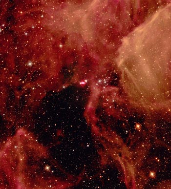

BARD PAPER: VERA5003
BARD PAPER: VERA5003
| Home
| Traveller
| BARD
| VERA
|
design by Nick Bradbeer

Nebula Award Winner
The Firedrake is a heavy fire support robot designed to operate in tandem with lighter scout/hunter bots, like the
Hummingbird. It resembles a small armoured personnel carrier - a blocky tracked vehicle with vertical sides and rear and a
slightly sloped front. Three blocky structures sit atop the roof - a pair of Swordfish Heavy Tac Missile tubes on the
left, a reloading crane in the centre and the firing tube for a magazine-fed Flying Fish Launcher on the right. In front
of the arm rises the comms/sensor cluster, a resembling an upturned cereal bowl on a stick.
Firedrakes have relatively low powered brains, since all they are required to do is find firing positions, stay low and
loose off missiles on command. They are quite capable of self-reloading, and usually operate around small stockpiles of
spare missiles.
When a fire mission is requested by a scout (human or robot) the Firedrake calculates an approximate target position and
launches a missile out towards the target's location. When the missile's laser-spot-tracker picks up the designation point
the Firedrake releases command funtion and allows the missile to home by itself.
For self defence, the Firedrake is armed with a pair of rapid-fire lasers, mounted on the loading crane to allow aiming.
It is intended that these should not be used. In extemis the Firedrake can guide its own missiles, usually opting for a
high angle loft-and-drop shot for short range self defence.
General Data
- Tech Level: 14
- Price: 0.66 MCr
- Size: 4 m3
- Mass: 7.139 tonnes
Engineering Data
- Power Plant: .75 MW Fusion Power Plant 360 days LHyd Fuel (73 litres)
- Transmission: Tracked
- Suspension: Tracked
- Maint: 2
Electronics
- Brain: TL-13b
- Logic: High Autonomous
- Command: Full
- Intelligence: 4
- Assets:
Tac Missile - 15
Laser Rifle - 12
Stealth - 12
Observation - 10 (+2 from IE Eyes)
- Computer: None other than Robot brain
- Avionics: None
- Commo: 2 x 300km maser,
2 x 300km laser control links / designators,
1 x 300km radio.
- Sensors: 1 x Image Enhancing Eye,
2 x Visible Spectrum Eye,
1 x Passive IR Eye,
1 x Audio Sensor,
1 x Amplied Ear,
1 x IR Motion Detector,
1 x Radiation Sensor.
- ECM/ECCM: EMM Masking
- Cargo: None
- Peripherals:
1 Reloading Crane, Video Display, Voder/Speaker, Master RCV Controller System, Strobe Light, and Siren.
Arms
| Arm | Volume | AGL | STR | Lift | Hit | UMD | Weapon | AMD |
|---|
| Reloading Crane | 40 liters | 5 | 20 | 1000 kg | 11 | 10 | - | - |
Armament
- Offensive 1 x 2-Pack Swordfish Launcher,
1 x 12-Pack Flying Fish Launcher,
2 x 8.1cm DEI Rapid Fire Lasers.
The Flying Fish Tactical Missile is a TL-9 400kg EAPLac Rocket with 8kg of fuel. It uses a 18cm SEFOP warhead and is capable of Mach 3.
The Swordfish Heavy Tactical Missile is a TL-9 600 kg EAPLac rocket with 37 kg of fuel. It uses a 30-cm HEAP warhead and is capable fo Mach 2.
- Defensive: None
- Stablization:
| Weapon | Guidance | Mass | Price | Conc-Burst | Pen Val | Max Rng | M/turn |
| Flying Fish | M,LC,LD | 45 kg | 1286 Cr | C;32 B:80 | 209C | 30.4 km | 940 |
| Swordfish | M,LC,LD | 240 kg | 3664 Cr | C:119 B:110 | 353C | 68.4 km | 680 |
M=Manual Guidance, LC=Laser Command and LD=Laser Designated.
| Weapon | ROF | DamDice | Pen Val | Magaz | S Range |
| 8.1-cm Laser Rifle | Auto-3 | 8-4-2-1 | Nil | - | 260m |
Movement
- Travel Move: 105/85 kph
- Combat Move: 25
- Endurance: 360 days
Armor
- Front: 60
- Side: 40
- Rear: 40
- Deck: 40
- Belly: 40
Traveller is a registered trademark of Far Future Enterprises.
Portions of this material are © 1977-1996 Far Future
Enterprises
BARD Logo Copyright ©1996 by Lawrence C. Cox.